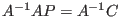
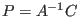
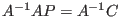
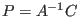

Next: Probability and Stochastic Matrices Up: Applications Previous: Electrical Circuits Contents Index
Cryptography is the art of encoding and decoding secret messages. The use of publicly accessible communication lines and the need to ensure information privacy has created a surge of interest in this area. In cryptography, coding algorithms are referred to as ciphers. Ciphers are used to change readable text (plaintext) to coded text (ciphertext). This process is called enciphering and the inverse action, creating plaintext from ciphertext, is called deciphering.
|
Using this simple cipher, we can encode the message:
This is the same procedure as performed by a computer when something is typed on the keyboard. The symbols on the keyboard are mapped onto unique numbers. The reverse happens when these numbers are sent to the monitor or printer for display.
This simple cipher is obviously too simple for serious secrecy. A more secure cipher system can
be obtained by separating the plaintext into groups of  letters and replacing each group with
letters and replacing each group with
 cipher letters. This is called a polygraphic system.
We will look at one such method,
which uses matrix multiplication, called Hill ciphers.
cipher letters. This is called a polygraphic system.
We will look at one such method,
which uses matrix multiplication, called Hill ciphers.
The most basic form of a Hill cipher involves breaking up a plaintext message into pairs of letters. An extra letter may be added to the plaintext to make an even number of characters. Our message would be grouped as

We then write each pair of numbers as column matrices and multiply each matrix by
We continue the process to get all the pairs of numbers for our ciphertext.
To decipher the message, the ciphertext is broken up into pairs, translated into numbers and then
each pair of numbers is multiplied by the inverse of the enciphering matrix  . Simply,
. Simply,  implies
that

, which gives us 
, where
implies
that

, which gives us 
, where  is the enciphering matrix,
is the enciphering matrix,  is the matrix
containing the pairs of plaintext numbers and
contains the pairs of ciphertext numbers. Of course, one
must be careful that
is the matrix
containing the pairs of plaintext numbers and
contains the pairs of ciphertext numbers. Of course, one
must be careful that  has an inverse. We will look at this more closely in the chapter on determinants.
has an inverse. We will look at this more closely in the chapter on determinants.
It is fairly easy to decipher a Hill cipher where the letters are grouped in pairs even if the
encoding matrix is unknown (it would mean trying out 736 2 2 matrices over
). However, the
difficulty of breaking a Hill cipher through trial-and-error increases enormously when larger groupings
are used and the modulus is unknown.
2 matrices over
). However, the
difficulty of breaking a Hill cipher through trial-and-error increases enormously when larger groupings
are used and the modulus is unknown.